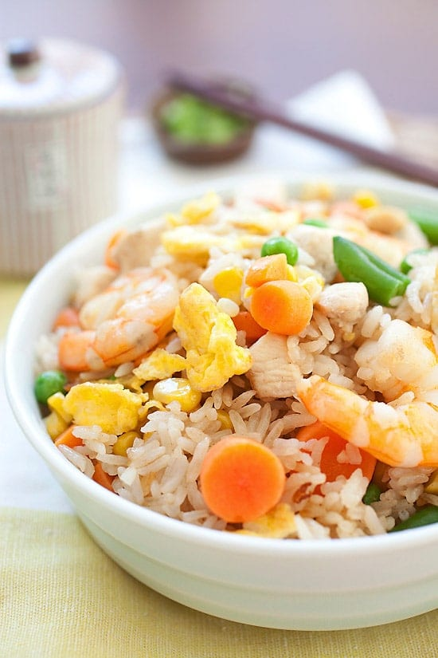

Fried rice with steamed white rice, egg, chicken, shrimp and mixed vegetables. Easy and the best fried rice recipe ever, much better and healthier than Chinese restaurants or takeouts!
Ingredients |
Preperation Time: 10 mins Cooking Time: 5 mins |
|
|---|---|---|
|
||